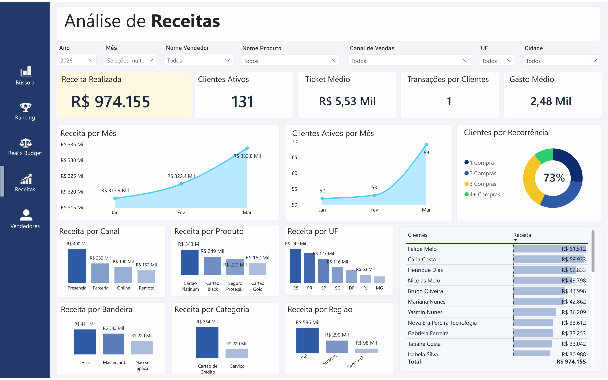

Dashboard de Vendas em Power BI
Este projeto apresenta um dashboard de vendas desenvolvido em Power BI para consolidar a visão comercial da empresa, com foco em performance de vendas, metas, análise de receitas e acompanhamento de indicadores estratégicos.
A solução foi estruturada para oferecer uma leitura executiva clara e orientada à ação, permitindo acompanhar resultados em tempo real, analisar o desempenho da equipe comercial, identificar oportunidades de crescimento e apoiar a tomada de decisão com mais assertividade.

Contexto e necessidade do negócio
A empresa possuía dados comerciais dispersos em diferentes sistemas e planilhas, dificultando a consolidação das informações e reduzindo a visibilidade sobre o desempenho de vendas. O acompanhamento dos resultados era pouco estruturado, com baixa clareza sobre metas, performance da equipe e evolução da receita.
Nesse cenário, surgiam dificuldades para responder perguntas essenciais para a gestão comercial:
- As vendas estão evoluindo de forma consistente ao longo do tempo?
- Quais vendedores estão performando acima ou abaixo das metas?
- Quais produtos, canais ou regiões geram mais receita?
- Existe recorrência de clientes ou dependência de vendas pontuais?
- O resultado está alinhado com as metas e o planejamento comercial?
Principais desafios
- Consolidar dados comerciais de diferentes fontes em uma única visão confiável
- Estruturar indicadores de performance alinhados às metas e ao planejamento comercial
- Garantir consistência na análise de vendas por período, canal, produto e vendedor
- Traduzir dados de vendas em insights claros para apoio à tomada de decisão
- Permitir análise de desempenho individual e coletivo da equipe comercial
- Construir um modelo de dados escalável, preparado para crescimento e novas análises
Construção da solução
A solução foi desenvolvida com base em três pilares principais: modelagem de dados, estruturação dos indicadores comerciais e construção da camada analítica, garantindo consistência, performance e facilidade de uso.
- Modelagem dimensional com separação entre tabelas fato de vendas e dimensões (clientes, produtos, vendedores, tempo)
- Estruturação de indicadores comerciais como receita, metas, atingimento, ticket médio e recorrência
- Desenvolvimento de medidas em DAX para análise de performance, variações e comparativos ao longo do tempo
- Padronização visual entre páginas para garantir consistência e fluidez na navegação
- Criação de visões analíticas focadas em performance comercial e tomada de decisão
Por que a solução foi construída desta forma
A solução foi concebida não apenas para apresentar dados, mas para conduzir a análise comercial de forma estruturada e orientada à ação. Cada página foi desenhada com um objetivo específico: visão executiva dos indicadores, acompanhamento de metas, ranking de vendedores e análise detalhada de receitas.
O foco principal foi permitir que o usuário identifique rapidamente oportunidades de crescimento, desvios de performance e padrões de venda, reduzindo o tempo de análise e aumentando a assertividade nas decisões. A combinação entre clareza visual e profundidade analítica garante uma experiência eficiente tanto para gestores quanto para equipes comerciais.
Principais indicadores analisados
Receita
Análise da evolução das vendas ao longo do tempo, com comparação entre realizado, metas e períodos anteriores, permitindo identificar tendências e sazonalidade.
Atingimento de Metas
Monitoramento do desempenho em relação às metas comerciais, evidenciando percentuais de atingimento e apoiando o acompanhamento da performance da equipe.
Performance de Vendedores
Análise individual e comparativa da equipe comercial, com ranking de vendedores, volume de vendas e identificação dos principais destaques.
Ticket Médio
Acompanhamento do valor médio por venda, permitindo avaliar o comportamento de compra dos clientes e identificar oportunidades de aumento de receita.
Recorrência de Clientes
Análise da frequência de compra, identificando clientes recorrentes e avaliando o nível de fidelização da base.
Variações
Comparação entre períodos e metas, destacando desvios positivos e negativos para orientar decisões comerciais com maior precisão.
Telas do Dashboard e Estrutura de Análise
Cada tela foi desenvolvida com um objetivo específico, organizando a análise comercial de forma progressiva — da visão executiva até o detalhamento de performance de vendas, equipe e receita.
Tela 1 — Bússola de Vendas (Visão Executiva)
 Clique para ampliar
Clique para ampliar
Esta tela apresenta a visão executiva consolidada do desempenho comercial, destacando indicadores-chave como receita, metas, atingimento e ticket médio. O objetivo é permitir uma leitura rápida da performance de vendas, facilitando a identificação de tendências e oportunidades de crescimento.
Tela 2 — Ranking de Vendedores
 Clique para ampliar
Clique para ampliar
Apresenta o desempenho da equipe comercial por meio de um ranking detalhado, permitindo comparar vendedores, identificar destaques e analisar contribuição individual nos resultados. Essa visão apoia decisões relacionadas a gestão de equipe, metas e incentivos.
Tela 3 — Real vs Budget
 Clique para ampliar
Clique para ampliar
Esta tela permite comparar o realizado com as metas definidas, evidenciando desvios e variações ao longo do tempo. A análise facilita o acompanhamento do planejamento comercial e a identificação de áreas que demandam ajustes.
Tela 4 — Análise de Receitas

Clique para ampliarExplora o comportamento da receita em diferentes dimensões, como produtos, canais e regiões. Permite identificar padrões de venda, sazonalidade e principais fontes de geração de valor.
Tela 5 — Análise de Vendedores
 Clique para ampliar
Clique para ampliar
Oferece uma visão detalhada da performance individual dos vendedores, incluindo indicadores como receita, ticket médio e comportamento da carteira de clientes. Essa análise apoia o desenvolvimento da equipe e a otimização da estratégia comercial.
Ganhos com a conclusão do trabalho
- Visão consolidada e em tempo real do desempenho comercial
- Maior controle sobre metas e acompanhamento do atingimento de resultados
- Identificação rápida de oportunidades de crescimento e desvios de performance
- Melhoria na gestão da equipe comercial com análise individual de vendedores
- Aumento da eficiência na tomada de decisão com base em dados confiáveis
- Redução do tempo gasto em análises manuais e consolidação de informações
- Estrutura analítica escalável para expansão e evolução do modelo de vendas
Quer uma solução assim na sua empresa?
Posso estruturar dashboards com foco em clareza, performance e tomada de decisão.
Falar comigo